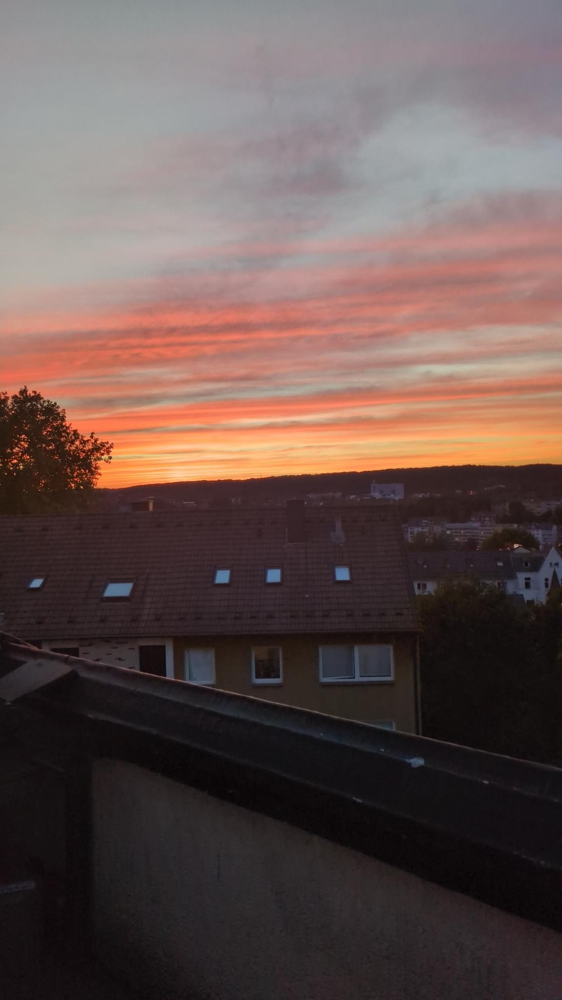
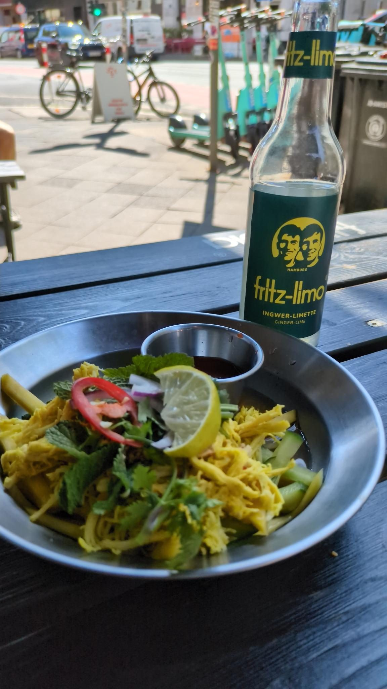
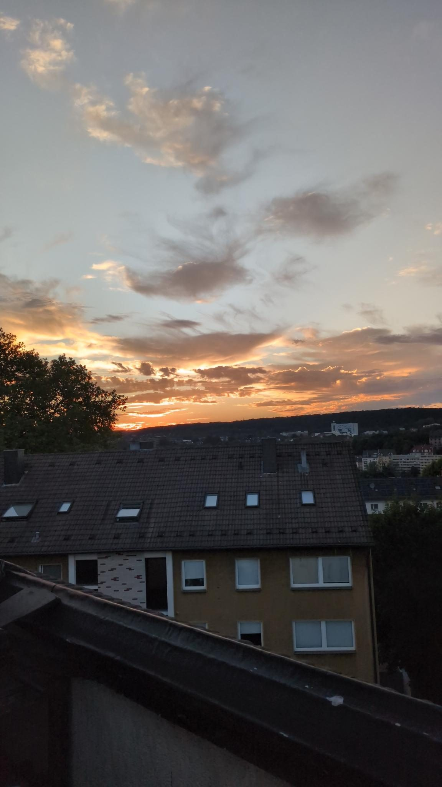
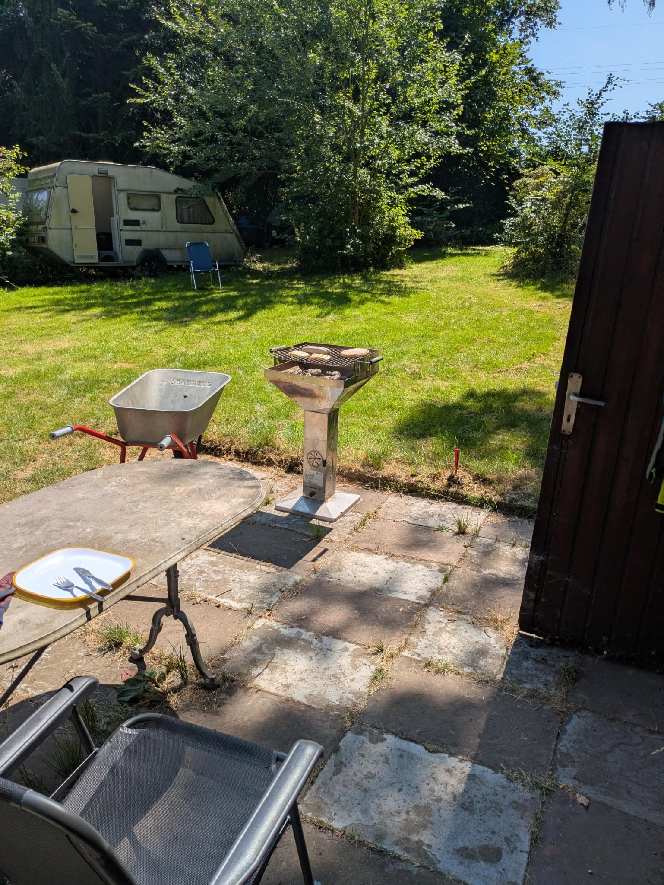
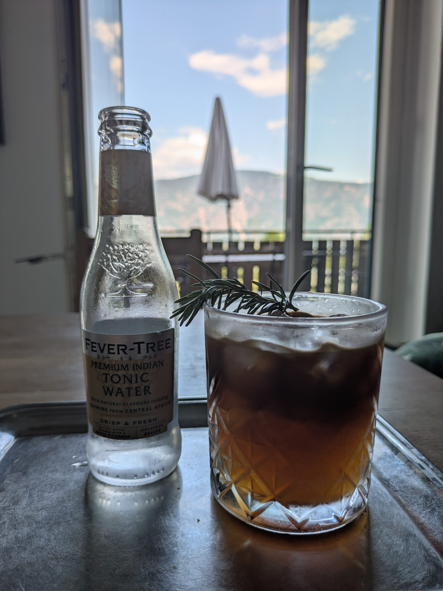

29. August 2026
Moseltour
Klosterruine bei Traben Trabach
Der Blick von meinem Balkon — meine Lieblingsaussicht.
Diese Aussicht begleitet mich seit Jahren, bei Sonnenuntergang, im Regen und in klaren Nächten. Bei jedem Aufruf dieser Seite zeigt der Header ein zufälliges Bild aus dieser Sammlung.
29. August 2026
Klosterruine bei Traben Trabach
1. August 2026

Als würde der Sonnenuntergang jetzt beweisen wollen, dass noch mehr geht...
29. Juli 2026

Immer wieder lecker im BanhMi
28. Juli 2026

Immer wieder ein super Sonnenuntergang!
28. Juli 2026

Dieses Jahr ist das Wetter optimal für den Garten. Da hält man sich gerne im Schatten auf.
27. Juli 2026

Die geniale Abwechslung für die heißen Tage. Ein Espresso-Tonic verschönert die Aussicht vom Balkon noch mehr…